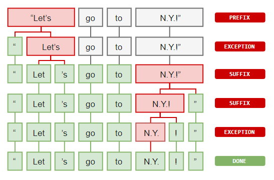
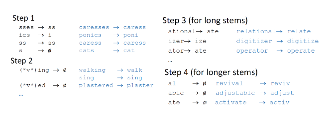
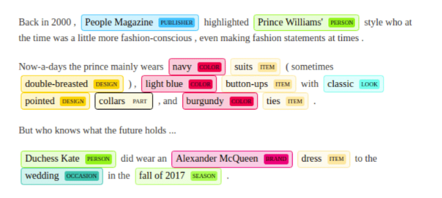

Cenni di analisi testuale
1. Introduzione
L'analisi testuale è la più frequente analisi attuabile nel web e nei social media. Il testo può essere strutturato, ovvero analizzabile in maniera deterministica da calcolatori (es. XML, JSON, codice), o non strutturato, ovvero scritto da esseri umani utilizzano il linguaggio naturale. Nel primo caso abbiamo regole formalizzate per analizzare il testo, ad esempio attraverso le espressioni regolari. Nel secondo caso è necessario adottare tecniche di Natural Language Processing (NLP), che si occupano dell'interazione tra l'umano e il calcolatore attraverso il linguaggio naturale. Le tecniche di NLP sono utilizzate per vari scopi, come l'estrazione di informazioni utili dal testo, categorizzazione del testo, sentiment analysis.
2. Natural language processing
Il Natural language processing è un processo molto sofisticato e può comporsi di vari passaggi. In generale, gli step da portare al termine sono i seguenti:
- Scomporre il testo nei suoi costituenti
- Identificare tali costituenti
- Calcolare statistiche sui tali
- Categorizzare le parole in base alle statistiche
2.1 Word tokenization
Per analizzare un testo bisogna dividerlo prima in una sequenza di token. Un token è una entità comparabile all'interno di un vocabolario di simboli o parole. Dopo aver eseguito la tokenization, è possibile calcolare alcune statistiche basilari, come contare le occorrenze della parola nel testo.
Nel processo di Word Tokenization vi sono alcuni costrutti da comprendere:
- Prefissi: caratteri iniziali (es. $5.00, "" è un prefisso)
- Suffissi: caratteri finali (es. 22km, "km" è un suffisso)
- Infissi: caratteri centrali (es. so-called, "-" è un infisso)
- Eccezioni: particolari regole che permettono di dividere (o non dividere) espressioni in token.
Un esempio di eccezione potrebbe essere la parola "N.Y." che indica "New York". I punti all'interno della parola devono essere considerati in un modo tale da non dividerla in due token differenti. Essendo questo un caso particolare di tokenizzazione, consiste in una eccezione.
2.2 Stemming
La word tokenization permette di dividere il testo in token, ma più token possono essere diverse coniugazioni dello stesso verbo e quindi indicare lo stesso termine (es. Run, Running \to run). Lo stemming è un processo naive che permette di raggruppare tali varianti in un solo stem (termine originale), rimuovendo la parte finale dalle parole. È necessario notare che l'utilizzo dello stemming riduce la semantica del testo. Un stemmer famoso per la lingua inglese è lo Stemmer di Porter, che consiste in 4 step:
Gli stemmer possono essere inaccurati in alcuni casi, come nelle forme irregolari (ran \rightarrow run). In certi casi, risulta conveniente adottare altri strumenti che vedremo in seguito.
2.3 Lemmatization
A differenza dello Stemming, il processo di Lemmatization consulta vocabolari dei linguaggi per attuare una analisi morfologica alle parole (es. associare was a be), ed analizza il contesto per risolvere ambiguità nell'interpretazione. La raffinatezza dell'algoritmo paga in prestazioni, per cui la scelta dello stemming rimane comunque valida.
2.4 Stop words
Alcuni termini come le congiunzioni, gli articoli, la punteggiatura, non hanno particolare impatto sull'analisi del linguaggio naturale. Tali termini prendono il nome di stop words: il loro contenuto informativo è oggettivamente basso, per cui una parte del processo di NLP prevede spesso la stop words removal, mantenendo solo termini realmente significativi.
2.5 POS - Part of speech tagging
Il linguaggio naturale è ambiguo: la semantica delle parole varia in base al contesto, contiene forme irregolari etc. Un processo nato allo scopo di interpretare ogni singolo termine all'interno di un testo è il Part-Of-Speech tagging (POS tagging). Ad ogni termine viene attribuito un tag, che segue uno standard universale e può essere di due tipi:
- Course-grained tag: un tag grossolano (es. verbo)
- Fine-grained tag: un tag specifico (es. aggettivo possessivo)
2.6 Named entity recognition
Il processo di Named Entity Recognition (NER) consiste nell’identificazione e nella classificazione di predefiniti tipi di entità all'interno del testo. Esempi classici di entità riconoscibili in un documento sono organizzazioni, persone, luoghi, etc.
2.7 Sentence segmentation
Durante l'analisi di un testo può risultare utile dividere in frasi. Lo scopo potrebbe essere quello di conteggiare le parole per frase, o farne la media. Il processo prende il nome di sentence segmentation e non risulta particolarmente complesso. Gli ostacoli principali di quest'ultimo sono dati dalla punteggiatura: non basta dividere il testo attraverso le occorrenze di ".", ma bisogna talvolta contestualizzare (es. in 25.5% il punto non indica l'inizio di una nuova frase).
2.8 Pipeline generale nella NLP
Riassumendo, il processo di NLP segue spesso la seguente pipeline:
- Word tokenization
- Stop words removal
- Stemming / Lemmatization
- POS tagging (dipende dall'applicazione)
- NER tagging (dipende dall'applicazione)
Chiaramente alcuni step possono essere omessi, altri step potrebbero essere introdotti.
3. Bag of words representation
La bag of words è un tipo di rappresentazione utilizzata nella Information Retrieval e nel NLP per rappresentare documenti testuali ignorando l'ordine delle parole. Permette di considerare la frequenza, o analogamente il conteggio, dei termini all'interno del testo. In tale senso, il documento è visualizzato come una borsa di parole. Le procedure principali per l'estrazione delle parole dal testo sono la word tokenization e molto spesso la stop words removal.
Una volta applicati gli step sul training set composto da documenti da analizzare, i termini risultanti vengono inseriti all'interno di un grande vocabolario V, che avrà una certa cardinalità nd = {t \mid t \in V}DDcd \in Dt \in Vdbow(d) = (c_1, \dots, c_n)nit_id. La rappresentazione attraverso il vettore bow permette all'algoritmo di lavorare con una struttura di lunghezza fissata.
3.1 Normalizzazione ed nbow
Due documenti potrebbero avere frequenze simili, ma una significativa differenza in quantità di parole. Osservando gli istogrammi sottostanti notiamo la similarità tra i documenti D_1D_2t_id Dato che il conteggio dei termini è sempre positivo (al più nullo), la normalizzazione effettuata sarà del tutto equivalente alla normalizzazione L1 (deviazione assoluta). Il risultato delle due normalizzazioni rende molto simili (se non identici) i due grafici.
3.2 TF-IDF
Se consideriamo il caso del rilevamento di posta spam, alcune parole come "Ciao", "Quando", "Buonasera" sono molto frequenti sia nelle mail di spam che nelle mail ordinarie. Parole come "Viagra", "Occasione", "Soldi" sono più comuni nelle email di spam, per cui dovrebbero avere un certo peso nella rilevazione. Tuttavia, con le tecniche adottate sin'ora, se in una mail di 100 parole vi è un'occorrenza della parola "Viagra", essa avrà comunque peso \frac{1}{100}m_it_jd_it_iP(T =t_j)t_j$. Più alta è l'informazione introdotta, più il peso del termine verrà aumentato.
3.3 Bag of things
Anziché basarsi sui termini, un'altro tipo di rappresentazione può considerare stems o vari tags. Elenchiamo alcune rappresentazioni utili: Bag of stems, Bag of POS, Bag of NER, Bag of lemmas. Bag of n-grams.
4. N-gram
Analizzare le singole parole è consono per alcuni task come la spam detection. Tuttavia, la struttura viene completamente andata persa, per cui è possibile che si creino delle ambiguità. Ad esempio:
- Jonh aiuta Robert a cambiare la ruota della macchina;
- Robert aiuta Jonh a cambiare la ruota della macchina;
Le due frasi hanno un significato totalmente diverso, eppure hanno un bag of words identico. Per risolvere tali ambiguità. è possibile raggruppare per 2,3, ..., n parole anziché per una sola parola. Raccogliendo per una parola si parla di uni-gram, per due parole di bi-gram ed in generale per n parole di n-gram. Tanto è grande n, quanto si preserva il contesto e si riducono le ambiguità. Tuttavia, per n grandi il processo di machine learning potrebbe fornire scarsi risultati; inoltre servono più risorse computazionali.